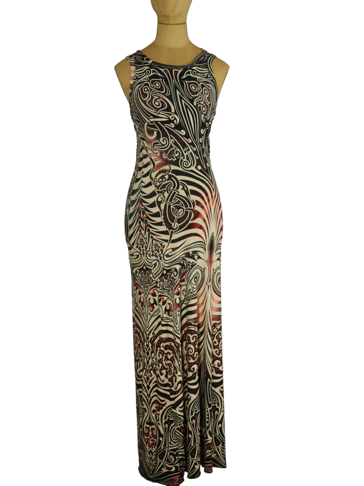

1 / 10Jean Paul Gaultier Tattoo Dress Multicolor M Aus dem kuratierten Archiv von Disorder119. Ein ikonisches Stück aus der legendären Tattoo Kollektion Frühjahr Sommer 1996 von Jean Paul Gaultier. Das bodenlange Kleid ist mit tribalähnlichen Tattoo-Motiven bedruckt, die sich wie eine zweite Haut über den Körper legen. Die grafischen Ornamente in Schwarz, Creme und Rot erzeugen eine markante Tiefenwirkung und spiegeln die für diese Kollektion typische Illusion von tätowierter Haut wider. Der ärmellose Schnitt mit rundem Halsausschnitt und die schmale, körpernahe Silhouette verlängern optisch die Linie und betonen die Konturen klar und selbstbewusst. Das elastische Mesh-Material schmiegt sich an und unterstreicht die technische Präzision sowie die sinnliche, provokative Handschrift des Designers. Ein emblematisches Sammlerstück mit hoher kulturhistorischer Relevanz. Details: Marke: Jean Paul Gaultier Jeans Kollektion: Tattoo Frühjahr Sommer 1996 Farbe: Multicolor (Schwarz / Creme / Rot) Größe: M Passform: Körpernah geschnitten Verschluss: Kein Verschluss Material: Mesh (elastisch) Herstellungsland: Nicht angegeben Fotografie & Passform: Das Kleidungsstück wurde auf unserer Standard-Schneiderpuppe fotografiert, die wir zur konsistenten Darstellung aller Kleidungsstücke verwenden. Maße der Schneiderpuppe: Brustumfang 89 cm Taillenumfang 66 cm Hüftumfang 89 cm Schulterbreite 38 cm Diese Maße dienen ausschließlich der visuellen Einordnung und werden nicht als Artikelmaße bezeichnet. Zustand: Sehr guter getragener Zustand ohne sichtbare Beschädigungen. Rechtliche Hinweise: Verkauf als gebrauchtes Kleidungsstück. Die Beschreibung erfolgt nach bestem Wissen und Gewissen. Farbnuancen und Oberflächenwirkungen können aufgrund von Lichtverhältnissen bei der Fotografie sowie unterschiedlicher Bildschirmdarstellungen leicht vom Original abweichen. Disorder119 steht für sorgfältig kuratierte Designerstücke mit Fokus auf Authentizität, Qualität und zeitlose Relevanz.
Disorder119 · Kuratiertes Archiv für Designer-, Vintage- und Contemporary-Mode. Jedes Stück wird einzeln ausgewählt, fotografiert und beschrieben.